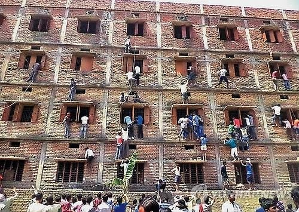
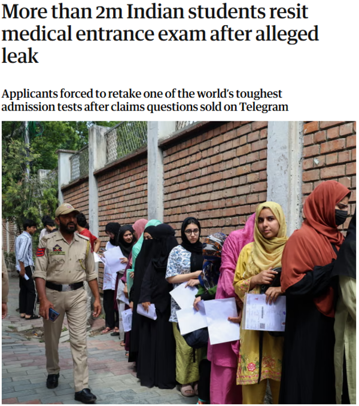
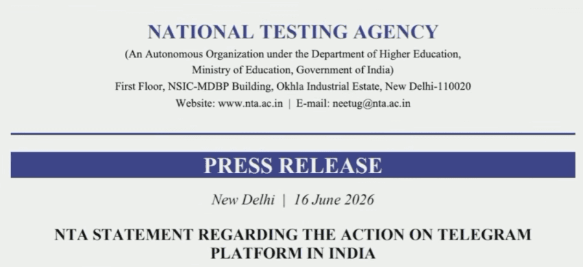
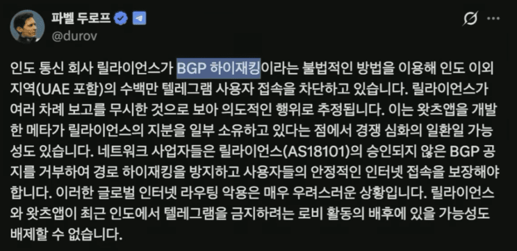

인도는 좋은 학교 = 신분 상승이라는 공식이 통하는 나라로
좋은 학교를 가려는 욕망이 너나할거 없이 아주 널리 퍼져있음

그렇다 보니까 어떻게든 시험만 잘보면 된다는 식의 풍조가 있어서
창 밖으로 답지 넣어주기 블루투스 실내화 등등 온갖 기상천외한 컨닝 방법이 나오고 있었는데

그러다가 결국 올해 5월에 인도 의대 입학시험 문제지가 유출이 되는 일까지 벌어짐
인도 교사 한명이 학생 통해서 시험지가 미리 텔래그램을 통해서 돌아다녔다는 말을 듣고 확인했는데
진짜였던거임..
그래서 시험 무효처리하고 재시험하는거로 결정됨
정부 입장에서는 유출이 또 일어나지 말라는 법도 없고
가짜로 또 유출됐다고 누가 주장하면 재재시험을 봐야하는데 좋은 방법이 없나 고민했는데
텔레그램이 문제니까 그 기간동안 텔레그램을 차단하면 된다는 사고에 도달함

실제로 그 기간동안 텔레그램 차단하겠다고 올린 공지
시험 앞뒤로 텔레그램 접속 차단하고 글 수정도 막겠다는거임

사소한 찐빠가 있었는데
인도 정부랑 텔레그램이랑 협조해서 차단한게 아니라 자국 통신사들 갈궈서 차단한거라서
인도 주변 나라에서까지 텔레그램이 접속 차단됨
창업주 두로프는 해당 소식 듣고 극대노
???: 어쨌든 재재시험은 막았으니 좋았쓰